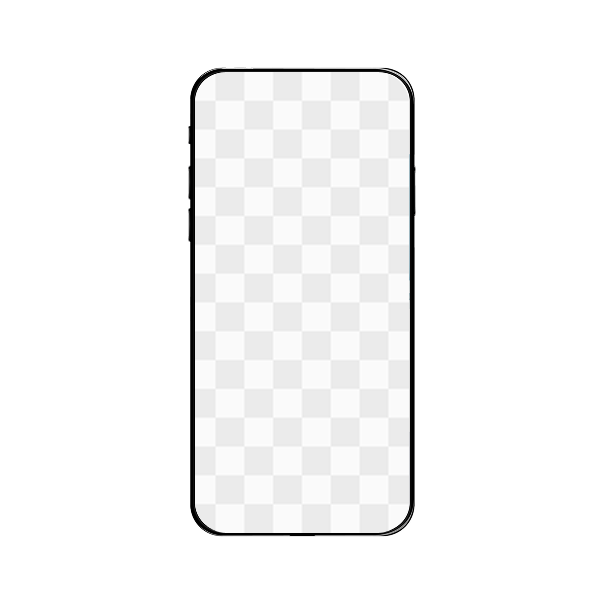

주요 성과
40만회
최고 조회수
1.7만회
최고 공유수
약 4배
평균 조회수
평균 조회수 400% 성장,
캐릭터 '랑무' SNS 마케팅 전략
자체 캐릭터 '랑무'를 활용해 인스타그램 계정을 운영하며,
캐릭터와 콘텐츠 방향 리뉴얼을 통해 계정을 성장시킨 콘텐츠 브랜딩 프로젝트입니다.

40만회
최고 조회수
1.7만회
최고 공유수
약 4배
평균 조회수
BEFORE

AFTER
조회수에 일희일비하지 않는 월/수/금 업로드라는 약속을 스스로 이행했습니다.
업로드 루틴 및 신뢰 구축

알고리즘 최적화
정기적 업로드로 탐색 페이지에 노출될 확률을 높여
더 많은 사람들에게 노출될 수 있습니다.
책임감 있는 브랜드 이미지
언제나 소통 가능한 활발한 계정이라는 인식을 만들어
인지도 낮은 랑무 캐릭터에 대한 신뢰를 형성했습니다.
업무 효율성
업로드를 루틴화해 번아웃 없이 장기적으로 계정을
운영할 수 있는 지속 가능한 구조를 만들었습니다.
업로드가 완료된 순간, 팬덤과의 소통을 시작했습니다.
Connection
캐릭터 인격화와 유대감 형성
랑무의 성격을 반영한 답변으로 팔로워가
캐릭터를 살아있는 존재로 느끼게 하면서
유대감을 쌓았습니다.
Initial Boost
초기 반응 확보를 위한 전략
업로드 직후 계정들과 활발히 교류하며
초기 좋아요와 댓글을 확보해 알고리즘이
콘텐츠 가치를 높게 평가하게 했습니다.
Golden Time
즉각적인 양방향 소통
모든 댓글에 빠르게 답글을 남겨 게시물이
활성화되게 하고 팔로워가 존중받는
느낌이 들도록 했습니다.